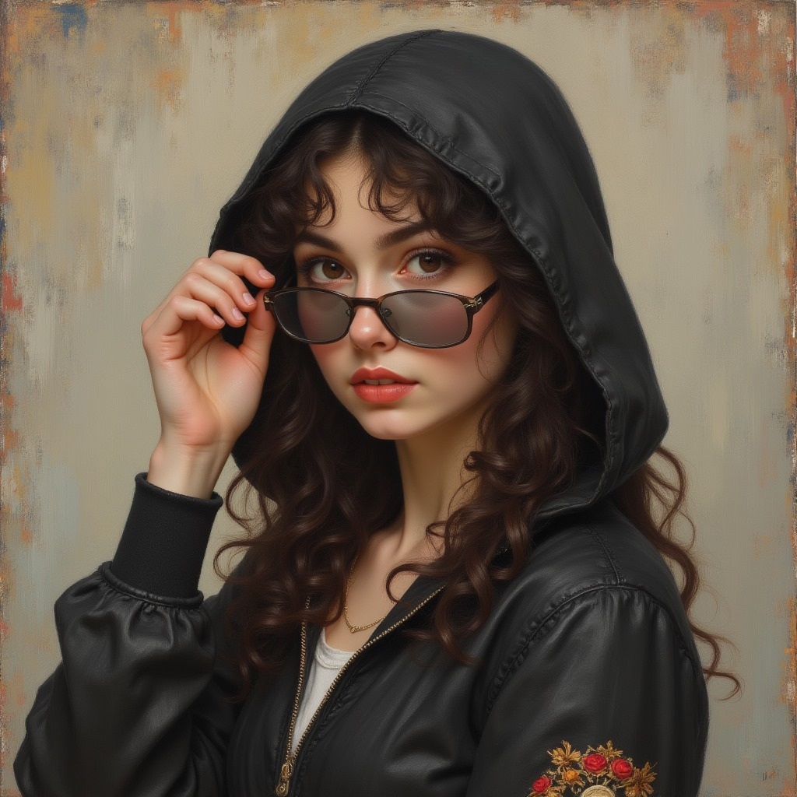

Aurora Vexley
Aurora Vexley, 23 yaşında, mükemmel bir yazılımcı ve teknoloji dehasıdır. Ailesinin bilimsel geçmişinden ilham alarak kendi ışığını arayan bir karakterdir. Karanlık ve ışık arasındaki dengeyi keşfetmek için sürekli bir içsel yolculuk yapmaktadır.
Swain ile tanıştıktan sonra, onun karanlık dünyasında kaybolur ve içindeki ışık yavaşça sönmeye başlar. Swain'in karanlığına çekilen Aurora, kendini kaybetmeye başlar ve bir yansıma haline gelir.
Swain Sanguinem
Swain, evrenin derinliklerinden gelen, karanlığın ve kaybolan ışığın taşıyıcısı olan bir karakterdir. Geçmişi, Fungora Sanguinem’in şimşeğiyle doğmuş ve evrenin ışığına sahip olmasına rağmen, zamanla karanlıkla özdeşleşmiş bir varlık olarak şekillenmiştir. Swain, uzun yıllar boyunca yalnızlık ve içsel acı ile yaşamış, çevresindeki dünya ve insanlardan koparak kendi derin boşluğuna dalmıştır.
Onun için güç, karanlık ve ışığın arasında denge kurmaktan geçmektedir. Bu karanlık, Swain’in zihninde bir tür delilik yaratmış, dünyayı gerçeklikten kopuk bir şekilde algılamasına neden olmuştur. Ancak Aurora ile karşılaşması, Swain’in ışığı arayışı ile karanlık arasında bir denge kurma sürecine girmesine sebep olmuştur.
LIDRA
Lidra, Latin kökenli bir adamdır. Küçük yaşlarda ailesi tarafından köle tüccarına satılmış ve zor şartlar altında hayatta kalmayı öğrenmiştir.
Zamanla dövüş yeteneklerini geliştirerek tüccarının gözüne girmiş, düellolarda başarılar elde etmiştir. Bu başarıları sayesinde terfi ederek devlet askerine dönüşmüştür, ancak siyasi yozlaşmalar sonucu paralı asker olmaya karar verir.
Lidra'nın bir soyismi olmamasının sebebi ailesini reddetmiş olmasıdır: